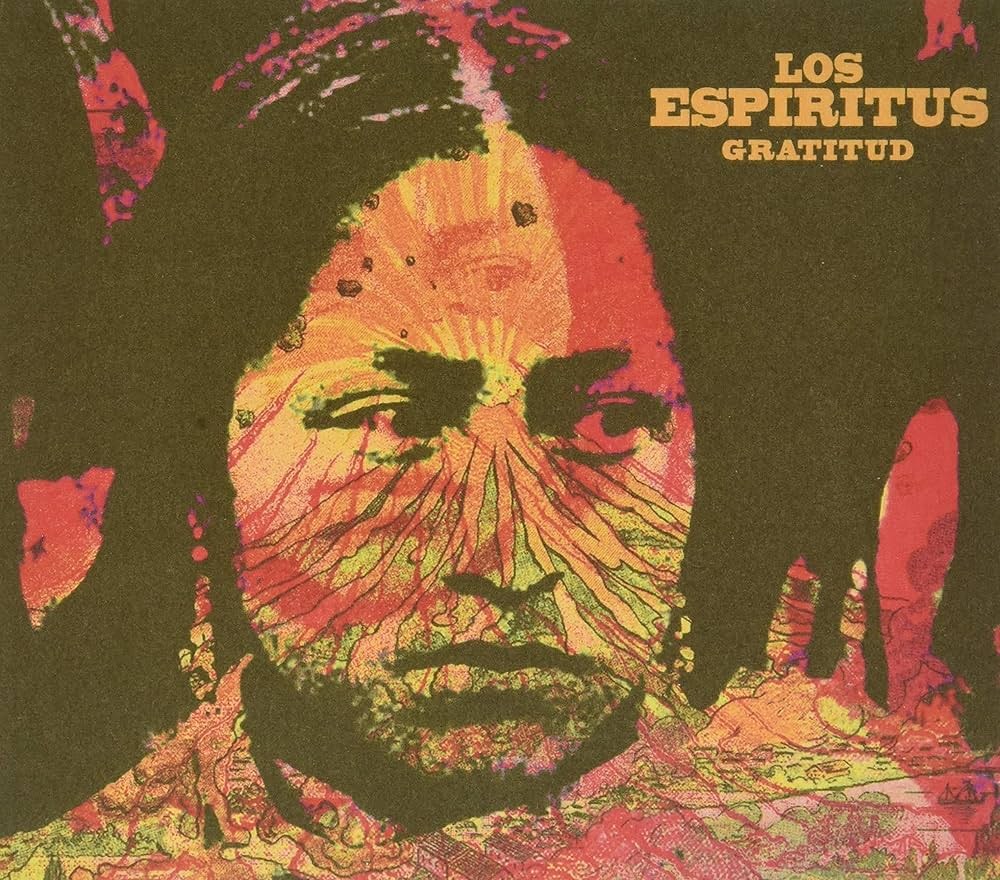
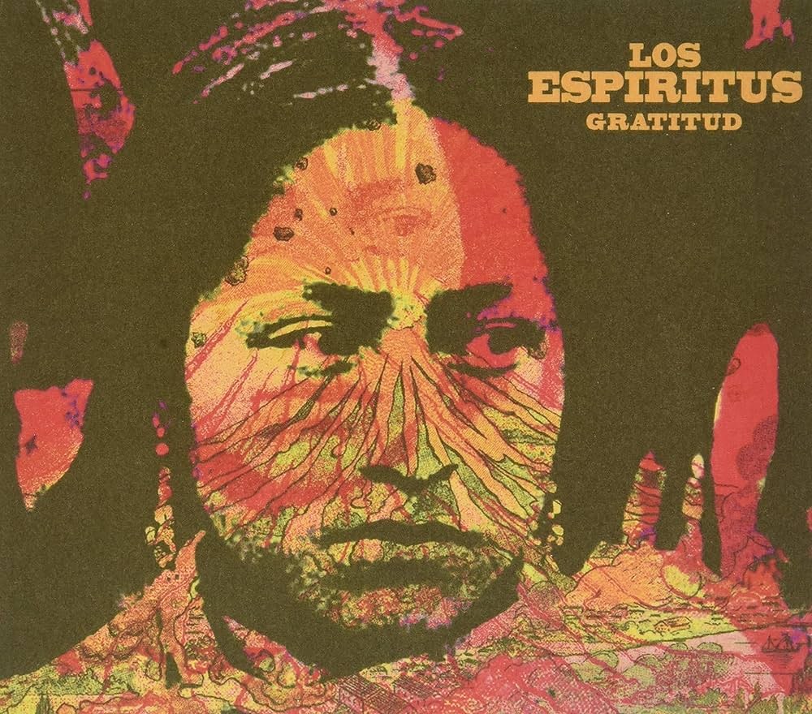

Los Espíritus es el proyecto alternativo de Maxi Prietto junto a otros secuaces del blues, el rock y las salas de ensayo, en el que vuelca su gran amor por el blues, pero en contextos más místicos y sobre bases de ritmos latinos. Ellos dicen que el fuego los unió una noche, lo cierto es que algo pasaba cada vez que se juntaban, ahí en La Paternal, el barrio de Pappo.
Mis dos álbumes favoritos son La Montaña y Gratitud.
Mis top de canciones son:
1. La crecida
2. Vamos a la luna
3. Calles Rotas
4. Noches de verano
 

Los conciertos de Los Espíritus son una experiencia de otro mundo. Cada instrumento es tocado en vivo y crea una vibra mística que envuelve a todos los presentes. Las luces y los visuales te sumergen en un viaje sensorial donde cada nota se siente en el cuerpo. El público canta, baila y se deja llevar por la energía colectiva, creando un ambiente lleno de magia, conexión y libertad. Asistir a uno de sus shows es más que escuchar música: es vivir una experiencia espiritual y emocional única.